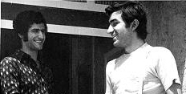
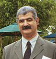

He was a mechanical
engineering student at Aryamehr University. He also organized a Music Room there
for students to enjoy classical music. This earned him the nick-name
"Abolmusighi" which literaly means 'Father of Music' in Arabic.
He resides in Sweden
and is workiong as a mechanical design engineer in a Swedish rotor development
firm. This makes him one of the few AMUT graduates who are practicing what they
studied in the college.
Visit Shiva's own home page.

This is a 1974 picture of when I was in Ardabil for climbing Mount Sabalan. We stayed at Shiva's home. This is the morning before the climb.

The proud son of Ardebil, in the AMUT Reunion 2000 in San Diego, CA.